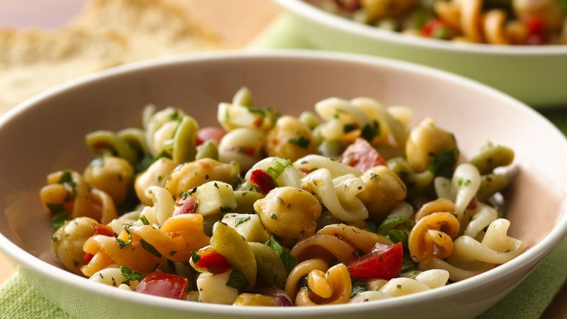

<--Back
Pasta Salad

Pasta salad with cucumber
Pasta salad is always a good choice for a cold dish option.
It can be used as a main or a side.
Ingredients
- 1 Box Suddenly Salad Original
- 1 Cucumber
- 2 Tbsp Salad Supreme
- 1/4 Cup Wishbone Italian Dressing
- Shredded Cheese for topping
Steps
- Cook pasta according to box but discard the seasoning packet.
- Peel, deseed, and dice cucumber.
- Mix together the Salad Supreme seasoning and the italian dressing.
- Mix in the cucumber.
- Drain pasta when done cooking and run under cold water until cooled.
- Drain as much excess water from pasta as possible and combine with cucumbers and dressing.
- Toss and serve with a healthy dash of shredded cheese on top!